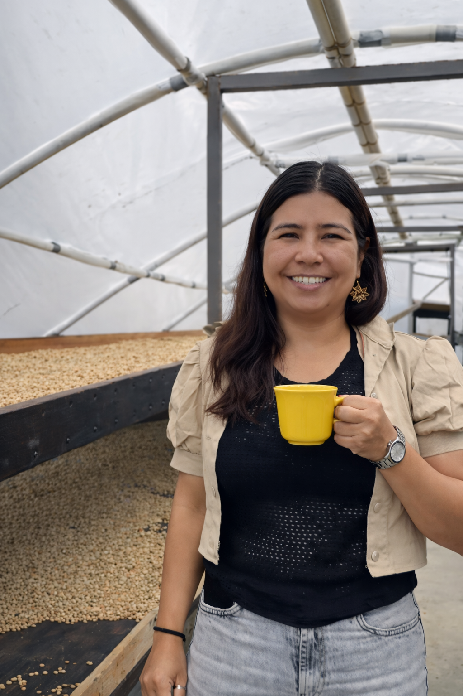
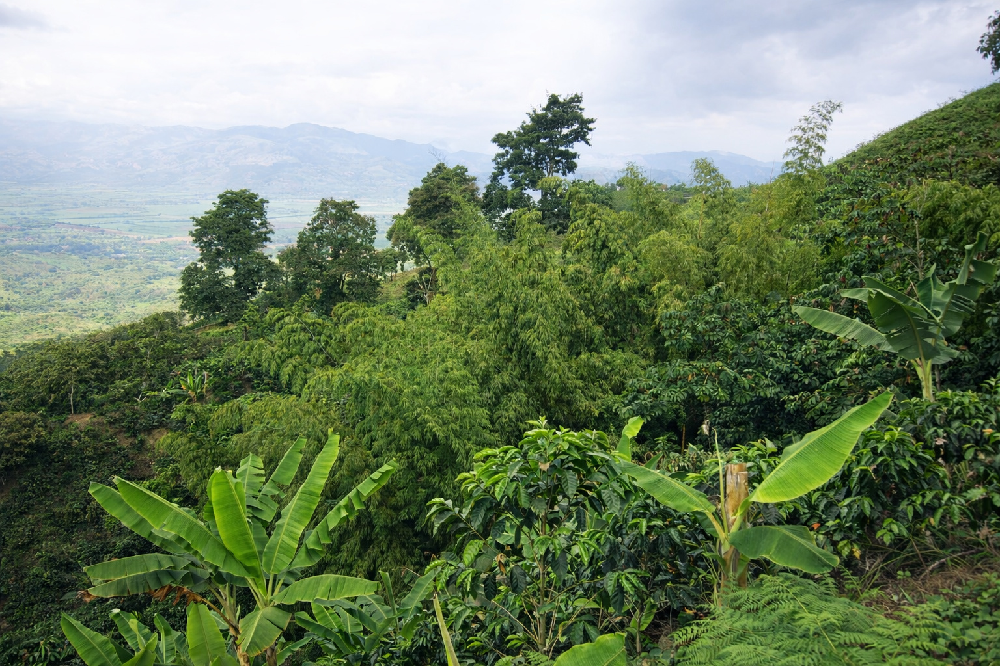
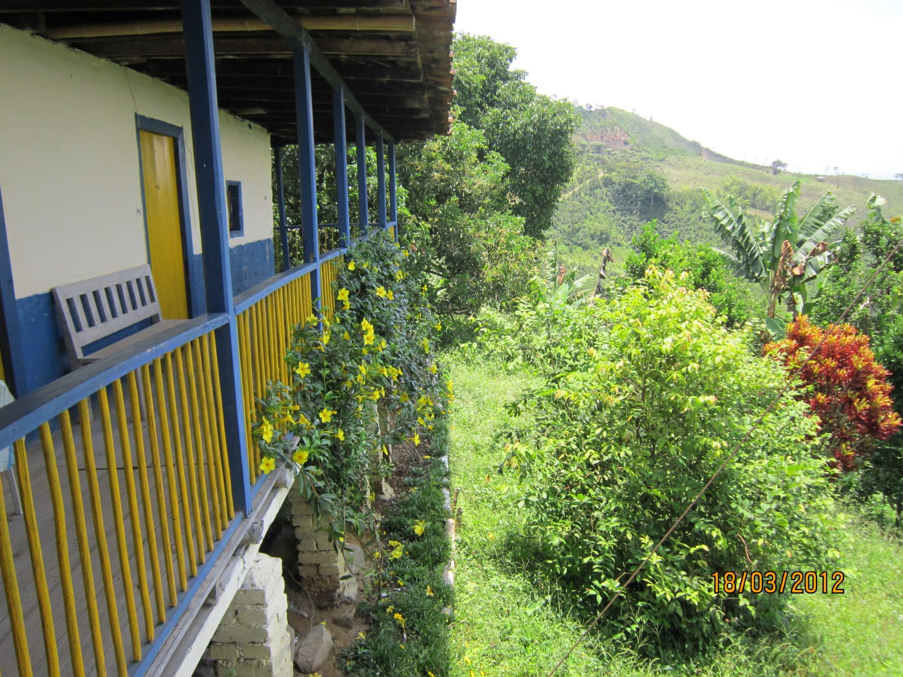
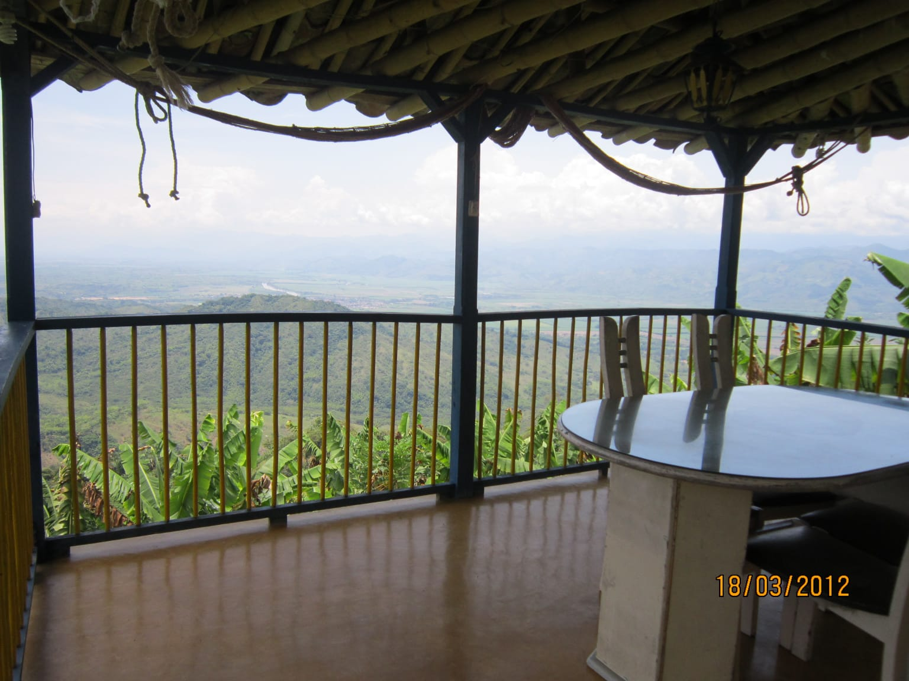

Cada lote tiene una finca, un paisaje y una historia.
Esta página reúne el recorrido de Café Leonor entre 2025 y 2026 a través de tres fincas:
La Sociedad, La Siria y La Esperanza. Aquí puedes ver qué productora estuvo detrás de cada lote,
de qué municipio proviene y cómo se expresa ese origen en la taza.
La trazabilidad aquí no se presenta como una ficha fría: se lee como un diario de origen.
Cada finca concentra uno o más lotes, y cada imagen ayuda a entender mejor el contexto de producción,
el paisaje y la mano que acompaña el café desde su cultivo hasta la taza.
2025Junio · Julio
Finca La Sociedad
Risaralda, Caldas Alejandra Ríos
Lote 01 · 11/06/2025Lote 02 · 09/07/2025
La Sociedad aporta una lectura muy abierta del paisaje cafetero. Sus registros combinan retrato,
zona de secado y vista sobre la montaña, mostrando un origen con presencia humana y una relación
directa entre la productora y el entorno.
PredioLa Sociedad
MunicipioRisaralda, Caldas
Altitud1640 msnm
VariedadCastillo y Bourbon Rosado
Perfil de tazaCaramelo, panela, chocolate y frutos rojos
Lectura visualPaisaje, cafetal y secado
Retrato en el cafetal

Zona de secado y control
2025 · 2026Septiembre · Marzo
Finca La Siria
Belalcázar, Caldas Gloria Jaramillo de Arango
Lote 03 · 11/09/2025Lote 06 · 02/03/2026
La Siria tiene una fuerza visual muy especial: su casa abierta al valle, la vista desde el balcón y el
entorno de ladera conectan el café con un paisaje amplio, luminoso y profundamente cafetero.
Aquí el origen se siente tanto en la finca como en la atmósfera.
PredioLa Siria
VeredaEl Madroño
MunicipioBelalcázar, Caldas
Altitud1600 msnm
VariedadCastillo y Caturra
Perfil de tazaPanela, chocolate y frutos amarillos
Atardecer desde el balcón

Mirador principal

Corredor de la casa

Vista sobre el valle cafetero
2025 · 2026Noviembre · Enero
Finca La Esperanza
Pereira, Risaralda Amparo Bermúdez
Lote 04 · 26/11/2025Lote 05 · 23/01/2026
La Esperanza muestra un origen más técnico y a la vez muy humano: la casa de la finca, la ladera sembrada
y el espacio de secado donde el café toma forma. Es una finca que deja ver tanto estructura como cuidado
en cada etapa del proceso.
PredioLa Esperanza
VeredaLa Convención
MunicipioPereira, Risaralda
Altitud1707 msnm
VariedadCastillo y Caturra
Perfil de tazaPanela, cítricos y chocolate
Casa principalVista del cafetal
A medida que TASARA sume nuevos lotes y más material audiovisual, esta línea de tiempo puede crecer con videos,
códigos de lote, nuevas fincas y más momentos de origen para que la experiencia siga siendo trazable y viva.